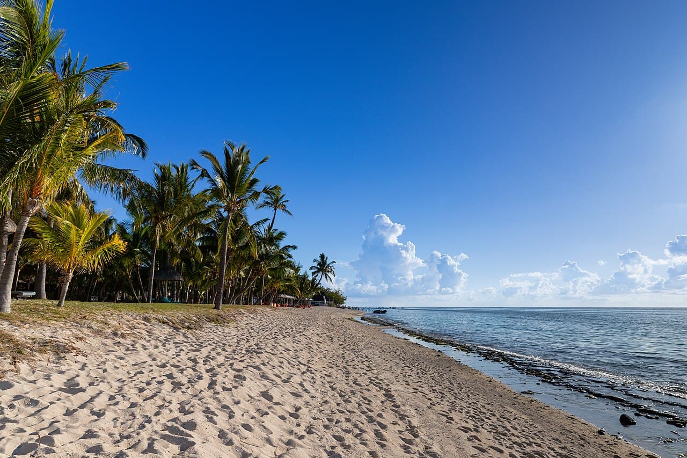

Le Morne
Maurice · kitesurf, windsurf, snorkeling

Lagon turquoise au pied d'une montagne classée : flat dans le lagon et la célèbre vague 'One Eye' pour les experts.
- Lieu
- Maurice
- Niveau
- Intermédiaire
- Activités
- kitesurf, windsurf, snorkeling
- Type d'eau
- Mer / océan
- Coordonnées
- -20.46, 57.31 (position approximative du secteur)
Dangers à connaître
- Récif coupant (One Eye) pour confirmés.
- Passe avec courant vers le large.
Le conseil d'Ocean Buddy
Reste dans le lagon pour débuter, One Eye = experts.
Ouvrir dans Ocean Buddy Télécharger sur l'App Store
Source : Description historique Ocean Buddy · vérification externe en attente.